Modeling and Control of a LFT-based LPV System
Contents
Problem Statement: Coupled Spinning Disks
A pair of rotating disks is shown in Figure 1. The slotted disks rotate at rates 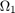 rad/s and 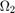 rad/s. The disks contain masses 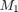 and 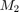, which can move in the horizontal plane, and slide in the radial direction The two masses are connected by a wire, which can transmitt force in both compression and tension. The wire acts as a spring with spring constant 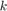. A coupler and pulley system handles the wire routing between the two disks. The effect of friction due to the sliding motion of each mass is modeled by a damping coefficient 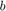.
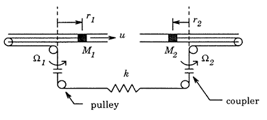
Figure 1: A pair of spinning disk with masses and [1].
The problem is to control the position of the two masses: 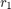 for mass and 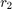 for . The control input is a radial force 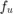 acting on mass , while there is a radial disturbance force acting on each mass: 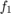 acting on and 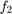 acting on . The equations of motion for this problem are:
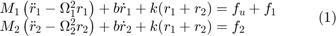
where:
- 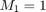 kg is the mass of the sliding mass in disk 1.
- 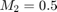 kg is the mass of the sliding mass in disk 2.
- 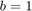 kg is the damping coefficient due to fricition (kg/sec).
- 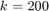 N/m is the spring constant of the wire connecting the masses.
- 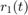 is the position of the sliding mass relative to the center of disk 1 (m).
- 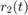 is the position of the sliding mass relative to the center of disk 2 (m).
- 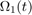 is the rotational rate of disk 1 (rad/s).
- 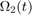 is the rotational rate of disk 2 (rad/s).
- is the control force acting radially on mass (N).
- is the disturbance force acting radially on mass (N).
- is the disturbance force acting radially on mass (N).
The rotational rates of the spinning disk are allowed to vary: 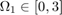 rad/s and 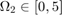 The rotational rates are not known in advance but are measured and available for control design.
The objective of the control design is to command the radial position of mass . Note that the control input is applied to mass , and is transmitted to mass through the wire connecting the two disks.
LFT-Based LPV System Formulation
The system in Equation (1) is already processing the inputs and outputs linearly, and the only nonlinear elements in Equation (1) are the rotation rates and . Lets choose the rotation rates as the scheduling parameters and transform the system into a LFT-based LPV model. Define 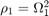 and 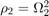, such that 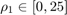 and 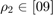. Furthermore, let
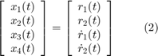
and
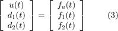
And rewrite the system in Equation (1) as the LPV system:
![$$
\left[ \begin{array}{c} \dot x_1 (t) \\ \dot x_2 (t) \\
\dot x_3 (t) \\ \dot x_4 (t) \end{array} \right]
= \left[ \begin{array}{cccc}
0 & 0 & 1 & 0 \\
0 & 0 & 0 & 1 \\
\rho_1 - \frac{k}{M_1} & -\frac{k}{M_1} & -\frac{b}{M_1} & 0 \\
-\frac{k}{M_2} & \rho_2 - \frac{k}{M_2} & 0 & -\frac{b}{M_2} \\
\end{array} \right]
\left[ \begin{array}{c} x_1 (t) \\ x_2 (t) \\
x_3 (t) \\ x_4 (t) \end{array} \right]
+
\left[ \begin{array}{ccc}
0 & 0 & 0 \\
0 & 0 & 0 \\
\frac{1}{M_1} & \frac{0.1}{M_1} & 0 \\
0 & 0 & \frac{0.1}{M_2} \\
\end{array} \right]
\left[ \begin{array}{c} f_u (t) \\ f_1 (t) \\ f_2 (t)\end{array} \right]
\ \ \ \ \ \ \ (4)$$](SpinningDisk_L2_LFT_eq01716043433009206979.png)
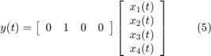
The following commands will generate the LPV system in Equations (5)-(6)
% Define system parameters m1 = 1; m2 = 0.5; k = 200; b = 1; % Define timve-varying parameters rho1 = tvreal('rho1',[0 9]); rho2 = tvreal('rho2',[0 25]); % Define system matrices: A = [ 0 0 1 0 ; ... 0 0 0 1 ; ... rho1-k/m1 -k/m1 -b/m1 0 ; ... -k/m2 rho2-k/m2 0 -b/m2 ]; B = [ 0 0 0 ; ... 0 0 0 ; ... 1/m1 .1/m1 0 ; ... 0 0 .1/m2 ]; C = [ 0 1 0 0]; D = [0 0 0]; % Define the parameter-varying LFT system: sys = ss(A,B,C,D)
Continuous-time PLFTSS with 1 outputs, 3 inputs, 4 states. The model consists of the following blocks: rho1: Time-varying real, range = [0,9], rate bounds = [-Inf,Inf], 1 occurrences rho2: Time-varying real, range = [0,25], rate bounds = [-Inf,Inf], 1 occurrences
LPV Control Design
We will design an LPV controller that optimizes the induced  norm of the weighted interconnection shown in Figure 2.
norm of the weighted interconnection shown in Figure 2.
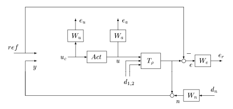
Figure 2: The weighted design interconnection [1].
The weights for the interconnection are chosen as [1]:
% Define weights:
We = tf([0.3 1.2],[1 0.04]);
Wu = tf([1 0.1],[0.01 125]);
Wa = 0.00001;
Wn = tf([1,0.4],[0.01 400]);
act = tf(1,[0.01 1]);
and we can form the weighted interconnection shown in Figure 2:
% Form synthesis interconnection: systemnames = 'sys act We Wu Wa Wn'; inputvar = '[ref;d{2};dn;u]'; outputvar = '[Wu;Wa;We;ref;sys+Wn]'; input_to_sys = '[act;d]'; input_to_act = '[u]'; input_to_Wa = '[act]'; input_to_Wu = '[u]'; input_to_Wn = '[dn]'; input_to_We = '[sys-ref]'; G = sysic;
We will use the function lpvsyn to synthesize a LFT-based LPV controller which minimizes the <..\..\Concepts\StabilityAndInducedGain\html\StabilityAndInducedGain.html stochastic LPV bound > of the weighted interconnection G in Figure 2. This synthesis will assume that the rate of variation in 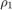 and 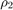 are unbounded, i.e. there is no limit to fast the parameters can change with time.
% Synthesize two-degree of freedom controller. nmeas = 2; % # of measurements ncont = 1; % # of controls [Knr,Gamma,Info] = lpvsyn(G,nmeas,ncont);
The control design is successfull, and the controller Knr is guarenteed to achieve an induced norm that is less than or equal to Gamma
Gamma
Gamma =
1.3361
Evaluating Pointwise Performance
Lets look at the closed-loop response for the original LPV system sys in the loop with the controller Knr:
% Form closed-loop sytem systemnames = 'sys act Knr'; inputvar = '[r;d{2}]'; outputvar = '[sys]'; input_to_sys = '[act;d]'; input_to_act = '[Knr]'; input_to_Knr = '[r;sys]'; CL = sysic;
We will start by applying LTI analysis techniques to evaluate the performance of the LFT-based LPV controller. The LFT-based LPV system can be transformed into a LTI system by holding the parameters at a constant value. We will evalaluate the closed-loop LPV system on a 3x3 grid of parameter values defined by: 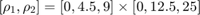.
The syntax to perform pointwise LTI analysis requires the user to pass in a rgrid object that specifies the grid of parameter values that the LFT-based LPV system should be evaluated at:
% Define the grid of parameter values: Domain = rgrid({'rho1','rho2'},{[0 4.5 9],[0 12.5 25]})
RGRID with the following parameters: rho1: Gridded real, 3 points in [0,9], rate bounds [-Inf,Inf]. rho2: Gridded real, 3 points in [0,25], rate bounds [-Inf,Inf].
We can start by studying the pointwise step response. The Control System Toolbox's command step is overloaded to work with the plftss object. It will compute the step response at each point in the grid, and plot them together on the same plot:
step(CL,Domain)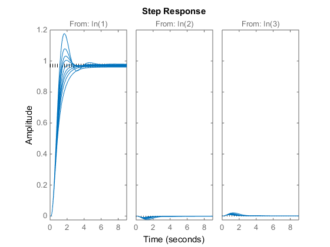
The controller achives approximatly 2.5 sec settling time and less than 3% steady-state tracking error. However, it suffers from large overshoot of approximatly 17% at 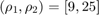. The effect of the disturbances is minimal.
Similarly we can create pointwise frequency responses using the bode command. Lets compare the pointwise frequency response of the open- and closed-loop system at frequencies between 0.1 to 20 rad/s
bode(sys,{0.1,100},'b',Domain)
hold on
bode(CL,{0.1,100},'r--',Domain)
legend('Open-loop','Closed-loop','location','best')
grid minor
hold off
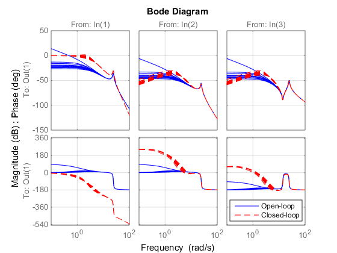 The closed-loop system has a bandwidth of approximatly 3 rad/s.
Evaluating LPV Time-Domain Performance
We will use the LPV simulation capabilities to inspect the performance of Knr. The parameters and will be made to vary with time: 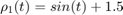 and  , while the system tracks a unit step response and rejects disturbances 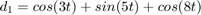 and 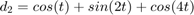.
, while the system tracks a unit step response and rejects disturbances 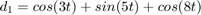 and 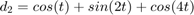.
% Define the inputs to the system: t = [0:0.01:15]'; u = ones(size(t)); d1 = cos(3*t)+sin(5*t)+cos(8*t); d2 = cos(t)+sin(2*t)+cos(4*t); % Define the trajectories of the parameters: ptraj.time = t; ptraj.rho1 = sin(t)+1.5; ptraj.rho2 = .5*cos(5*t)+3; % Perform LPV simulation: lpvlsim(CL,ptraj,[u,d1,d2],t);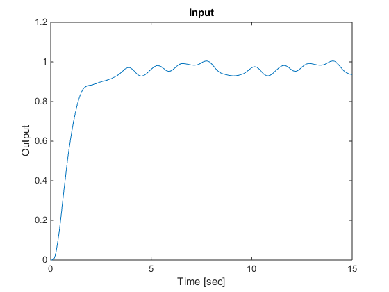
Lets evaluate the impact that the disturbances had on the response by repeating the simulation without disturbances:
lpvlsim(CL,ptraj,[u,d1,d2],t); hold on lpvstep(CL(:,1),ptraj); legend('LPV simulation with disturbances',... 'LPV simulation without disturbances',... 'location','best')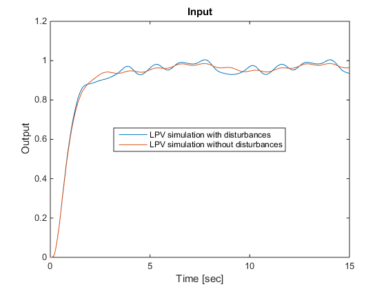
The tracking performance is not very good. It is both oscillatory, and the steady-state error is noticable. The error due to the added distrubances is on the order of 5%, and they are confined to an approximately 1-2 Hz oscillation about the nominal. This frequency range is incidentally where the system's pointwise frequency response analysis indicated that disturbances would have the greatest effect on the output signal.
References
- F. Wu, "Control of Linear Parameter Varying Systems," Ph.D. dissertation, Department of Mechanical Engineering, University of California at Berkeley, CA, May 1995.